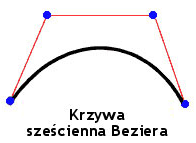

| Pakiet | flash.display |
| Klasa | public final class Graphics |
| Dziedziczenie | Graphics |
| Wersja języka: | ActionScript 3.0 |
| Wersje środowiska wykonawczego: | AIR 1.0, Flash Player 9, Flash Lite 4 |
graphics, która jest obiektem Graphics. Poniżej zostały wymienione funkcje pomocnicze, zapewnione w celu ułatwienia obsługi: drawRect(), drawRoundRect(), drawCircle() oraz drawEllipse().
Nie jest możliwe utworzenie obiektu Graphics bezpośrednio z kodu ActionScript. W przypadku wywołania metody new Graphics() zostanie zgłoszony wyjątek.
Klasa Graphics jest końcowa; nie mogą być tworzone z niej podklasy.
 Ukryj dziedziczone właściwości publiczne
Ukryj dziedziczone właściwości publiczne Pokaż dziedziczone właściwości publiczne
Pokaż dziedziczone właściwości publiczne| Metoda | Zdefiniowane przez | ||
|---|---|---|---|
beginBitmapFill(bitmap:BitmapData, matrix:Matrix = null, repeat:Boolean = true, smooth:Boolean = false):void
Wypełnia obszar rysunkowy obrazem bitmapowym. | Graphics | ||
Określa proste wypełnienie jednokolorowe, które będzie używane w kolejnych wywołaniach innych metod klasy Graphics, takich jak lineTo() lub drawCircle(). | Graphics | ||
beginGradientFill(type:String, colors:Array, alphas:Array, ratios:Array, matrix:Matrix = null, spreadMethod:String = "pad", interpolationMethod:String = "rgb", focalPointRatio:Number = 0):void
Określa wypełnienie gradientowe, które będzie stosowane przy kolejnych wywołaniach metod z klasy Graphics (np. lineTo() i drawCircle()) dla obiektu. | Graphics | ||
Określa wypełnienie cieniowane, które będzie stosowane przy kolejnych wywołaniach metod klasy Graphics (np. lineTo() i drawCircle()) dla obiektu. | Graphics | ||
Kasuje grafikę przypisaną do tego obiektu Graphics, resetuje wypełnienia i style linii. | Graphics | ||
Kopiuje wszystkie polecenia rysunku ze źródłowego obiektu Graphics do wywołującego obiektu Graphics. | Graphics | ||
cubicCurveTo(controlX1:Number, controlY1:Number, controlX2:Number, controlY2:Number, anchorX:Number, anchorY:Number):void
Rysuje sześcienną krzywą Beziera z bieżącego położenia rysowania do określonego punktu kotwiczenia. | Graphics | ||
Rysuje kwadratową krzywą Beziera przy użyciu bieżącego stylu linii z bieżącego położenia rysowania do punktu (anchorX, anchorY) zgodnie z punktem kontrolnym (controlX, controlY). | Graphics | ||
Rysuje okrąg. | Graphics | ||
Rysuje elipsę. | Graphics | ||
Wysyła serię instancji IGraphicsData dla rysunku. | Graphics | ||
Wysyła serię poleceń dla rysunku. | Graphics | ||
Rysuje prostokąt. | Graphics | ||
drawRoundRect(x:Number, y:Number, width:Number, height:Number, ellipseWidth:Number, ellipseHeight:Number = NaN):void
Rysuje zaokrąglony prostokąt. | Graphics | ||
drawTriangles(vertices:Vector.<Number>, indices:Vector.<int> = null, uvtData:Vector.<Number> = null, culling:String = "none"):void
Renderuje zbiór trójkątów, zwykle w celu odkształcenia bitmap i nadania im wyglądu trójwymiarowego. | Graphics | ||
Stosuje wypełnienie linii oraz krzywych, które zostały dodane od momentu ostatniego wywołania metod beginFill(), beginGradientFill() lub beginBitmapFill(). | Graphics | ||
 |
Wskazuje, czy dla obiektu zdefiniowano określoną właściwość. | Object | |
|
Wskazuje, czy instancja klasy Object należy do łańcucha prototypów obiektu określonego jako parametr. | Object | |
lineBitmapStyle(bitmap:BitmapData, matrix:Matrix = null, repeat:Boolean = true, smooth:Boolean = false):void
Określa bitmapę, jaka będzie używana dla obrysu podczas rysowania linii. | Graphics | ||
lineGradientStyle(type:String, colors:Array, alphas:Array, ratios:Array, matrix:Matrix = null, spreadMethod:String = "pad", interpolationMethod:String = "rgb", focalPointRatio:Number = 0):void
Określa gradient, jaki będzie używany dla obrysu podczas rysowania linii. | Graphics | ||
Określa moduł cieniujący, jaki będzie używany dla obrysu podczas rysowania linii. | Graphics | ||
lineStyle(thickness:Number = NaN, color:uint = 0, alpha:Number = 1.0, pixelHinting:Boolean = false, scaleMode:String = "normal", caps:String = null, joints:String = null, miterLimit:Number = 3):void
Określa styl linii jaki będzie używany dla kolejnych wywołań metod Graphics, takich jak lineTo() lub drawCircle(). | Graphics | ||
Rysuje linię przy wykorzystaniu obecnego stylu linii z obecnej pozycji rysowania do (x,y); wówczas obecna pozycja rysowania jest ustawiana na (x,y). | Graphics | ||
Zmienia położenie kursora rysowania na (x, y). | Graphics | ||
|
Wskazuje, czy określona właściwość istnieje i jest przeliczalna. | Object | |
Pobiera zawartość grafiki wektorowej obiektu Sprite lub Shape (opcjonalnie jego elementów potomnych). | Graphics | ||
|
Ustawia dostępność właściwości dynamicznej używanej w pętlach. | Object | |
|
Zwraca ciąg reprezentujący obiekt — sformatowany zgodnie z konwencjami właściwymi dla ustawień regionalnych. | Object | |
|
Zwraca ciąg reprezentujący określony obiekt. | Object | |
|
Zwraca pierwotną wartość dla określonego obiektu. | Object | |
beginBitmapFill | () | metoda |
public function beginBitmapFill(bitmap:BitmapData, matrix:Matrix = null, repeat:Boolean = true, smooth:Boolean = false):void| Wersja języka: | ActionScript 3.0 |
| Wersje środowiska wykonawczego: | AIR 1.0, Flash Player 9, Flash Lite 4 |
Wypełnia obszar rysunkowy obrazem bitmapowym. Bitmapa może być powtarzana lub w postaci mozaiki w celu wypełnienia obszaru. Wypełnienie będzie obowiązywało do czasu wywołania metody beginFill(), beginBitmapFill(), beginGradientFill() lub beginShaderFill(). Wywołanie metody clear() powoduje wyczyszczenie zawartości wypełnienia.
Aplikacja renderuje wypełnienie w momencie narysowania trzech lub więcej punktów lub gdy wywołana zostanie metoda endFill().
Parametry
bitmap:BitmapData — Przezroczysty lub nieprzezroczysty obraz bitmapowy, zawierający bity, które będą wyświetlane.
| |
matrix:Matrix (default = null)
matrix = new flash.geom.Matrix();
matrix.rotate(Math.PI / 4);
| |
repeat:Boolean (default = true)true, wówczas obraz bitmapowy jest powtarzany we wzorze mozaikowym. Jeżeli wartość false, wówczas obraz bitmapowy nie jest powtarzany, zaś krawędzie bitmapy są wykorzystywane w dowolnym obszarze wypełniania, który rozciąga się poza bitmapę.
Przykładowo biorąc pod uwagę poniższą bitmapę (wzór szachownicy wielkości 20 x 20 pikseli):
W przypadku ustawienia właściwości
W przypadku ustawienia dla właściwości
| |
smooth:Boolean (default = false)false, wówczas powiększone obrazy bitmapowe są renderowane za pomocą algorytmu sąsiadowania i występuje efekt pikselizacji. Jeżeli wartość true, wówczas powiększone obrazy bitmapowe są renderowane za pomocą algorytmu dwuliniowego. Renderowanie przy użyciu algorytmu najbliższego sąsiada (NNA, ang. nearest neighbor algorithm) jest szybsze.
|


Powiązane elementy interfejsu API
Przykład ( Sposób korzystania z tego przykładu )
image1.jpg), który jest obracany i powtarzany, w celu wypełnienia prostokąta.
- Plik obrazu (
image1.jpg) jest ładowany przy pomocy obiektówLoaderiURLRequest. W tym przypadku plik znajduje się w tym samym katalogu co plik SWF. Konieczne jest aby plik SWF został skompilowany przy pomocy zabezpieczenia odtwarzania lokalnego, ustawionego na dostęp tylko do plików lokalnych. - Przy ładowaniu obrazu (zdarzenie
Eventjest zakończone) wywoływana jest metodadrawImage(). MetodaioErrorHandler()zapisuje komentarz śledzenia, w przypadku niepoprawnego załadowania obrazu. - W metodzie
drawImage()obiektBitmapDatajest instancjonowany, zaś jego szerokość i wysokość są ustawiane zgodnie z obrazem (image1.jpg). Wówczas obraz źródłowy jest wrysowywany w obiekt BitmapData. Następnie w obiekcie SpritemySpriterysowany jest prostokąt wypełniany przy wykorzystaniu obiektu BitmapData. Korzystając z obiektuMatrix, metodabeginBitmapFill()obraca obraz o 45 stopni, a następnie rozpoczyna wypełnianie prostokąta obrazem.
package {
import flash.display.Sprite;
import flash.display.BitmapData;
import flash.display.Loader;
import flash.net.URLRequest;
import flash.events.Event;
import flash.events.IOErrorEvent;
import flash.geom.Matrix;
public class Graphics_beginBitmapFillExample extends Sprite {
private var url:String = "image1.jpg";
private var loader:Loader = new Loader();
public function Graphics_beginBitmapFillExample() {
var request:URLRequest = new URLRequest(url);
loader.load(request);
loader.contentLoaderInfo.addEventListener(Event.COMPLETE, drawImage);
loader.contentLoaderInfo.addEventListener(IOErrorEvent.IO_ERROR, ioErrorHandler);
}
private function drawImage(event:Event):void {
var mySprite:Sprite = new Sprite();
var myBitmap:BitmapData = new BitmapData(loader.width, loader.height, false);
myBitmap.draw(loader, new Matrix());
var matrix:Matrix = new Matrix();
matrix.rotate(Math.PI/4);
mySprite.graphics.beginBitmapFill(myBitmap, matrix, true);
mySprite.graphics.drawRect(100, 50, 200, 90);
mySprite.graphics.endFill();
addChild(mySprite);
}
private function ioErrorHandler(event:IOErrorEvent):void {
trace("Unable to load image: " + url);
}
}
}
beginFill | () | metoda |
public function beginFill(color:uint, alpha:Number = 1.0):void| Wersja języka: | ActionScript 3.0 |
| Wersje środowiska wykonawczego: | AIR 1.0, Flash Player 9, Flash Lite 4 |
Określa proste wypełnienie jednokolorowe, które będzie używane w kolejnych wywołaniach innych metod klasy Graphics, takich jak lineTo() lub drawCircle(). Wypełnienie będzie obowiązywało do czasu wywołania metody beginFill(), beginBitmapFill(), beginGradientFill() lub beginShaderFill(). Wywołanie metody clear() powoduje wyczyszczenie zawartości wypełnienia.
Aplikacja renderuje wypełnienie w momencie narysowania trzech lub więcej punktów lub gdy wywołana zostanie metoda endFill().
Parametry
color:uint — Kolor wypełnienia (0xRRGGBB).
| |
alpha:Number (default = 1.0) |
Powiązane elementy interfejsu API
Przykład
Sposób korzystania z tego przykładu
Sposób zastosowania tej metody został przedstawiony na końcu tej lekcji w sekcji Przykład.
beginGradientFill | () | metoda |
public function beginGradientFill(type:String, colors:Array, alphas:Array, ratios:Array, matrix:Matrix = null, spreadMethod:String = "pad", interpolationMethod:String = "rgb", focalPointRatio:Number = 0):void| Wersja języka: | ActionScript 3.0 |
| Wersje środowiska wykonawczego: | AIR 1.0, Flash Player 9, Flash Lite 4 |
Określa wypełnienie gradientowe, które będzie stosowane przy kolejnych wywołaniach metod z klasy Graphics (np. lineTo() i drawCircle()) dla obiektu. Wypełnienie będzie obowiązywało do czasu wywołania metody beginFill(), beginBitmapFill(), beginGradientFill() lub beginShaderFill(). Wywołanie metody clear() powoduje wyczyszczenie zawartości wypełnienia.
Aplikacja renderuje wypełnienie w momencie narysowania trzech lub więcej punktów lub gdy wywołana zostanie metoda endFill().
Parametry
type:String — Wartość z klasy GradientType, która określa który z typów gradientów należy zastosować: GradientType.LINEAR czy GradientType.RADIAL.
| |||||||||
colors:Array — Tablica wartości kolorów RGB w formacie szesnastkowym do wykorzystania w gradiencie, na przykład: czerwony to 0xFF0000, niebieski to 0x0000FF itd. Możliwe jest określenie maksymalnie 15 kolorów. Dla każdego koloru należy określić odpowiednią wartość w parametrach alpha i proporcji.
| |||||||||
alphas:Array — Tablica wartości alpha dla odpowiednich kolorów w tablicy kolorów; wartości prawidłowe są w zakresie od 0 do 1. Jeżeli wartość wynosi mniej niż 0, wówczas wartość domyślna wynosi 0. Jeżeli wartość wynosi więcej niż 1, wówczas wartość domyślna wynosi 1.
| |||||||||
ratios:Array — Tablica proporcji dystrybucji kolorów; wartości prawidłowe są w zakresie od 0 do 255. Ta wartość definiuje procent szerokości, w której kolor jest próbkowany w 100%. Wartość 0 reprezentuje położenie po lewej stronie pola gradientu, zaś wartość 255 reprezentuje położenie po prawej stronie pola gradientu.
Uwaga: Ta wartość reprezentuje położenia w polu gradientu, a nie układu współrzędnych końcowego gradientu, który może być szerszy lub cieńszy od pola gradientu. Należy określić wartość dla każdej wartości parametru Przykładowo dla gradientu liniowego, który zawiera dwa kolory (niebieski i zielony), poniższy przykład ilustruje umiejscowienie kolorów w formie gradientowej według wartości innych niż znajdujące się w tablicy
Wartości w tablicy muszą zwiększać się w sekwencji; przykładowo: | |||||||||
matrix:Matrix (default = null)createGradientBox(), która pozwala na wygodne ustawienie matrycy do użycia z metodą beginGradientFill().
| |||||||||
spreadMethod:String (default = "pad")SpreadMethod.PAD, SpreadMethod.REFLECT lub SpreadMethod.REPEAT.
Przykładowo biorąc pod uwagę prosty gradient liniowy między dwoma barwami:
import flash.geom.*
import flash.display.*
var fillType:String = GradientType.LINEAR;
var colors:Array = [0xFF0000, 0x0000FF];
var alphas:Array = [1, 1];
var ratios:Array = [0x00, 0xFF];
var matr:Matrix = new Matrix();
matr.createGradientBox(20, 20, 0, 0, 0);
var spreadMethod:String = SpreadMethod.PAD;
this.graphics.beginGradientFill(fillType, colors, alphas, ratios, matr, spreadMethod);
this.graphics.drawRect(0,0,100,100);
W tym przykładzie zastosowano metodę rysowania
W przypadku zastosowania metody rysowania
W przypadku zastosowania metody rysowania
| |||||||||
interpolationMethod:String (default = "rgb")InterpolationMethod.LINEAR_RGB lub InterpolationMethod.RGB
Przykładowo biorąc pod uwagę prosty gradient liniowy między dwoma barwami (przy parametrze
| |||||||||
focalPointRatio:Number (default = 0)focalPointRatio ustawioną na wartość 0,75:
|


Zgłasza
ArgumentError — Jeżeli parametr type nie jest poprawny.
|
Powiązane elementy interfejsu API
beginShaderFill | () | metoda |
public function beginShaderFill(shader:Shader, matrix:Matrix = null):void| Wersja języka: | ActionScript 3.0 |
| Wersje środowiska wykonawczego: | Flash Player 10, AIR 1.5 |
Określa wypełnienie dla modułu cieniującego, które będzie stosowane przy kolejnych wywołaniach metod klasy Graphics (np. lineTo() i drawCircle()) dla obiektu. Wypełnienie będzie obowiązywało do czasu wywołania metody beginFill(), beginBitmapFill(), beginGradientFill() lub beginShaderFill(). Wywołanie metody clear() powoduje wyczyszczenie zawartości wypełnienia.
Aplikacja renderuje wypełnienie w momencie narysowania trzech lub więcej punktów lub gdy wywołana zostanie metoda endFill().
Wypełnianie przy użyciu modułów cieniujących nie jest obsługiwane w przypadku renderowania GPU
Parametry
shader:Shader — Moduł cieniujący, jaki ma zostać użyty dla wypełnienia. Ta instancja modułu cieniującego nie musi określać obrazu wejściowego. Jeśli jednak w module cieniującym określone są obrazy wejściowe, dane wejściowe należy wprowadzić ręcznie. Aby określić dane wejściowe, należy ustawić właściwość input odpowiedniej właściwości ShaderInput, która należy do właściwości Shader.data.
W przypadku przekazania instancji modułu cieniującego jako argumentu moduł cieniujący jest kopiowany wewnętrznie. Podczas operacji wypełniania używana jest kopia wewnętrzna, a nie odwołanie do oryginalnego modułu cieniującego. Wszelkie zmiany modułu cieniującego, takie jak zmiana wartości parametru, obiektu wejściowego lub kodu bajtowego, nie są stosowane do skopiowanego modułu cieniującego, który jest używany dla wypełnienia. | |
matrix:Matrix (default = null)
matrix = new flash.geom.Matrix();
matrix.rotate(Math.PI / 4);
Współrzędne odebrane w module cieniującym są określane na podstawie macierzy określonej dla parametru |
Zgłasza
ArgumentError — Gdy typ wyjścia modułu cieniującego nie jest zgodny z tą operacją (moduł cieniujący musi określać wyjście pixel3 lub pixel4).
| |
ArgumentError — Gdy moduł cieniujący określa obraz wejściowy, które nie został udostępniony.
| |
ArgumentError — W przypadku filtrów ByteArray lub Vector.Instancja <Number> jest używana jako obiekt wejściowy, a właściwości width i height nie zostały określone dla ShaderInput, lub określone wartości nie są zgodne z ilością danych w obiekcie wejściowym. Więcej informacji można znaleźć w opisie właściwości ShaderInput.input.
|
Powiązane elementy interfejsu API
clear | () | metoda |
public function clear():void| Wersja języka: | ActionScript 3.0 |
| Wersje środowiska wykonawczego: | AIR 1.0, Flash Player 9, Flash Lite 4 |
Czyści grafikę przypisaną do tego obiektu Graphics, zeruje wypełnienia i style linii.
copyFrom | () | metoda |
public function copyFrom(sourceGraphics:Graphics):void| Wersja języka: | ActionScript 3.0 |
| Wersje środowiska wykonawczego: | Flash Player 10, AIR 1.5, Flash Lite 4 |
Kopiuje wszystkie polecenia rysowania ze źródłowego obiektu Graphics do wywołującego obiektu Graphics.
Parametry
sourceGraphics:Graphics — Obiekt Graphics, z którego kopiowane będą polecenia rysunku.
|
cubicCurveTo | () | metoda |
public function cubicCurveTo(controlX1:Number, controlY1:Number, controlX2:Number, controlY2:Number, anchorX:Number, anchorY:Number):void| Wersja języka: | ActionScript 3.0 |
| Wersje środowiska wykonawczego: | Flash Player 11, AIR 3 |
Rysuje sześcienną krzywą Beziera z bieżącego położenia rysowania do określonego punktu kotwiczenia. Sześcienne krzywe Beziera składają się z dwóch punktów kotwiczenia oraz dwóch punktów kontrolnych. Krzywa interpoluje oba punkty kotwiczenia i zmienia kształt w kierunku dwóch punktów kontrolnych.

Cztery punkty używane do rysowania sześciennej krzywej Beziera przy użyciu metody cubicCurveTo():
- Bieżące położenie rysowania stanowi pierwszy punkt kotwiczenia.
- Parametry
anchorXianchorYokreślają drugi punkt kotwiczenia. - Parametry
controlX1icontrolY1określają pierwszy punkt kontrolny. - Parametry
controlX2icontrolY2określają drugi punkt kontrolny.
W przypadku wywołania metody cubicCurveTo() przed wywołaniem metody moveTo() krzywa ma początek w punkcie (0, 0).
Jeśli metoda cubicCurveTo() zakończy się powodzeniem, środowisko wykonawcze Flash ustawi bieżące położenie rysowania w punkcie (anchorX, anchorY). Jeśli metoda cubicCurveTo() zakończy się niepowodzeniem, bieżące położenie rysowania pozostanie bez zmian.
Jeśli w klipie filmowym istnieje zawartość utworzona przy użyciu narzędzi do rysowania aplikacji Flash, wówczas rezultaty wywołań metody cubicCurveTo() są rysowane pod tą zawartością.
Parametry
controlX1:Number — Określa pozycję poziomą pierwszego punktu kontrolnego względem punktu pasowania macierzystego obiektu ekranowego.
| |
controlY1:Number — Określa pozycję pionową pierwszego punktu kontrolnego względem punktu pasowania macierzystego obiektu ekranowego.
| |
controlX2:Number — Określa pozycję poziomą drugiego punktu kontrolnego względem punktu pasowania macierzystego obiektu ekranowego.
| |
controlY2:Number — Określa pozycję pionową drugiego punktu kontrolnego względem punktu pasowania macierzystego obiektu ekranowego.
| |
anchorX:Number — Określa pozycję poziomą punktu kotwiczenia względem punktu pasowania macierzystego obiektu ekranowego.
| |
anchorY:Number — Określa pozycję pionową punktu kotwiczenia względem punktu pasowania macierzystego obiektu ekranowego.
|
Przykład ( Sposób korzystania z tego przykładu )
Kod rysuje cztery krzywe w celu otrzymania okręgu, a następnie wypełnia kształt kolorem niebieskim.
Ze względu na naturę równania kwadratowego Beziera nie jest to okrąg doskonały. Najlepszym sposobem rysowania okręgu jest wykorzystanie metody drawCircle() klasy Graphics.
package {
import flash.display.Sprite;
import flash.display.Shape;
public class Graphics_cubicCurveToExample extends Sprite
{
public function Graphics_cubicCurveToExample():void
{
var rounderObject:Shape = new Shape();
rounderObject.graphics.beginFill(0x0000FF);
rounderObject.graphics.moveTo(250, 0);
rounderObject.graphics.cubicCurveTo(275, 0, 300, 25, 300, 50);
rounderObject.graphics.cubicCurveTo(300, 75, 275, 100, 250, 100);
rounderObject.graphics.cubicCurveTo(225, 100, 200, 75, 200, 50);
rounderObject.graphics.cubicCurveTo(200, 25, 225, 0, 250, 0);
rounderObject.graphics.endFill();
this.addChild(rounderObject);
}
}
}
curveTo | () | metoda |
public function curveTo(controlX:Number, controlY:Number, anchorX:Number, anchorY:Number):void| Wersja języka: | ActionScript 3.0 |
| Wersje środowiska wykonawczego: | AIR 1.0, Flash Player 9, Flash Lite 4 |
Rysuje kwadratową krzywą Beziera przy użyciu bieżącego stylu linii z bieżącego położenia rysowania do punktu (anchorX, anchorY) zgodnie z punktem kontrolnym o współrzędnych (controlX, controlY). Obecna pozycja rysowania jest ustawiona na (anchorX, anchorY). W przypadku, gdy klip filmowy w którym przeprowadzane jest rysowanie posiada zawartość, która została utworzona przy pomocy narzędzi rysowania aplikacji Flash, wówczas wywołania metody curveTo() są rysowane pod zawartością. W sytuacji gdy zostanie wywołana metoda curveTo() przed wywołaniami metody moveTo(), wówczas domyślną pozycją obecnego rysowania jest (0,0). Jeżeli brak jest któregoś z parametrów ta metoda kończy się niepowodzeniem, zaś obecna pozycja rysowania nie jest zmieniana.
Narysowana krzywa jest kwadratową krzywą Beziera. Kwadratowe krzywe Beziera składają się z dwóch punktów kotwiczenia oraz jednego punktu kontrolnego. Krzywa interpoluje oba punkty kotwiczenia i krzywi się w kierunku punktu kontrolnego.

Parametry
controlX:Number — Liczba wskazująca pozycję poziomą punktu kontrolnego względem punktu rejestracji nadrzędnego obiektu wyświetlanego.
| |
controlY:Number — Liczba wskazująca pozycję pionową punktu kontrolnego względem punktu rejestracji nadrzędnego obiektu wyświetlanego.
| |
anchorX:Number — Liczba wskazująca pozycję poziomą następnego punktu kotwiczenia względem punktu rejestracji nadrzędnego obiektu wyświetlanego.
| |
anchorY:Number — Liczba wskazująca pozycję pionową następnego punktu kotwiczenia względem punktu rejestracji nadrzędnego obiektu wyświetlanego.
|
Przykład ( Sposób korzystania z tego przykładu )
Należy narysować cztery krzywe w celu otrzymania okręgu, a następnie wypełnić kolorem zielonym.
Należy zauważyć, iż ze względu na naturę równania kwadratowego Beziera, nie jest to okrąg doskonały. Najlepszym sposobem rysowania okręgu jest wykorzystanie metody drawCircle() klasy Graphics.
package {
import flash.display.Sprite;
import flash.display.Shape;
public class Graphics_curveToExample1 extends Sprite
{
public function Graphics_curveToExample1():void
{
var roundObject:Shape = new Shape();
roundObject.graphics.beginFill(0x00FF00);
roundObject.graphics.moveTo(250, 0);
roundObject.graphics.curveTo(300, 0, 300, 50);
roundObject.graphics.curveTo(300, 100, 250, 100);
roundObject.graphics.curveTo(200, 100, 200, 50);
roundObject.graphics.curveTo(200, 0, 250, 0);
roundObject.graphics.endFill();
this.addChild(roundObject);
}
}
}
curveTo().
Rysowane są dwie krzywe linie grubości 1 pikseli, zaś przestrzeń pomiędzy jest wypełniana na biało. Metoda moveTo() jest stosowana w celu ustawiania obecnej pozycji rysowania na współrzędne (100, 100). Pierwsza krzywa przenosi pozycję rysowania na (100, 200) - punkt docelowy. Druga krzywa zwraca pozycję z powrotem do pozycji startowej (100, 100) - punktu docelowego. Poziome punkty kontrolne określają różne rozmiary krzywych.
package {
import flash.display.Sprite;
import flash.display.Shape;
public class Graphics_curveToExample2 extends Sprite
{
public function Graphics_curveToExample2() {
var newMoon:Shape = new Shape();
newMoon.graphics.lineStyle(1, 0);
newMoon.graphics.beginFill(0xFFFFFF);
newMoon.graphics.moveTo(100, 100);
newMoon.graphics.curveTo(30, 150, 100, 200);
newMoon.graphics.curveTo(50, 150, 100, 100);
graphics.endFill();
this.addChild(newMoon);
}
}
}
drawCircle | () | metoda |
public function drawCircle(x:Number, y:Number, radius:Number):void| Wersja języka: | ActionScript 3.0 |
| Wersje środowiska wykonawczego: | AIR 1.0, Flash Player 9, Flash Lite 4 |
Rysuje okrąg. Należy ustawić styl linii, wypełnienie lub obie te właściwości przed wywołaniem metody drawCircle(), poprzez wywołanie metody linestyle(), lineGradientStyle(), beginFill(), beginGradientFill() lub beginBitmapFill().
Parametry
x:Number — Położenie x środka okręgu względem punktu rejestracji nadrzędnego obiektu wyświetlanego (w pikselach).
| |
y:Number — Położenie y środka okręgu względem punktu rejestracji nadrzędnego obiektu wyświetlanego (w pikselach).
| |
radius:Number — Promień okręgu (w pikselach).
|
Powiązane elementy interfejsu API
Przykład
Sposób korzystania z tego przykładu
Sposób zastosowania tej metody został przedstawiony na końcu tej lekcji w sekcji Przykład.
drawEllipse | () | metoda |
public function drawEllipse(x:Number, y:Number, width:Number, height:Number):void| Wersja języka: | ActionScript 3.0 |
| Wersje środowiska wykonawczego: | AIR 1.0, Flash Player 9, Flash Lite 4 |
Rysuje elipsę. Należy ustawić styl linii, wypełnienie lub obie te właściwości przed wywołaniem metody drawEllipse(), poprzez wywołanie metody linestyle(), lineGradientStyle(), beginFill(), beginGradientFill() lub beginBitmapFill().
Parametry
x:Number — Położenie x lewego górnego punktu obwiedni elipsy względem punktu rejestracji macierzystego obiektu wyświetlania (w pikselach).
| |
y:Number — Położenie y lewego górnego punktu obwiedni elipsy względem punktu rejestracji macierzystego obiektu wyświetlania (w pikselach).
| |
width:Number — Szerokość elipsy (w pikselach).
| |
height:Number — Wysokość elipsy (w pikselach).
|
Powiązane elementy interfejsu API
Przykład ( Sposób korzystania z tego przykładu )
drawEgg() w celu narysowania trzech jaj różnego rozmiaru (trzy rozmiary elips), w zależności od parametru eggSize.
- Konstruktor wywołuje funkcję metody
drawEgg()oraz przekazuje parametry poziome i pionowe gdzie jajo powinno być narysowane, oraz typ jaja (eggSize) (Wysokość i szerokość jaj (elips) może być wykorzystana przy podjęciu decyzji gdzie należy je wyświetlić.) - Funkcja metody
drawEgg()rysuje elipsy różnego rozmiaru oraz wypełnia je przy wykorzystaniu metodybeginFill(). Dla tej funkcji nie opracowano mechanizmu obsługi błędów postępu.
package {
import flash.display.Sprite;
import flash.display.Shape;
public class Graphics_drawEllipseExample extends Sprite
{
public static const SMALL:uint = 0;
public static const MEDIUM:uint = 1;
public static const LARGE:uint = 2;
public function Graphics_drawEllipseExample()
{
drawEgg(SMALL, 0, 100);
drawEgg(MEDIUM, 100, 60);
drawEgg(LARGE, 250, 35);
}
public function drawEgg(eggSize:uint, x:Number, y:Number):void {
var myEgg:Shape = new Shape();
myEgg.graphics.beginFill(0xFFFFFF);
myEgg.graphics.lineStyle(1);
switch(eggSize) {
case SMALL:
myEgg.graphics.drawEllipse(x, y, 60, 70);
break;
case MEDIUM:
myEgg.graphics.drawEllipse(x, y, 120, 150);
break;
case LARGE:
myEgg.graphics.drawEllipse(x, y, 150, 200);
break;
default:
trace ("Wrong size! There is no egg.");
break;
}
myEgg.graphics.endFill();
this.addChild(myEgg);
}
}
}
drawGraphicsData | () | metoda |
public function drawGraphicsData(graphicsData:Vector.<IGraphicsData>):void| Wersja języka: | ActionScript 3.0 |
| Wersje środowiska wykonawczego: | Flash Player 10, AIR 1.5 |
Wysyła serię instancji IGraphicsData dla rysunku. Ta metoda akceptuje wektor zawierający obiekty, łącznie ze ścieżkami, wypełnieniami i obrysami, które implementują interfejs IGraphicsData. W celu renderowania pełnego kształtu wektor instancji IGraphicsData może odwoływać się do części kształtu lub złożonego, w pełni zdefiniowanego zestawu danych.
Ścieżki Graphics mogą zawierać inne ścieżki graficzne. Jeśli wektor graphicsData zawiera ścieżkę, podczas tej operacji będzie renderowana ścieżka i wszystkie jej ścieżki podrzędne.
Parametry
graphicsData:Vector.<IGraphicsData> — Wektor zawierający obiekty graficzne, z których każdy musi implementować interfejs IGraphicsData.
|
Powiązane elementy interfejsu API
Klasa GraphicsBitmapFill
Klasa GraphicsEndFill
Klasa GraphicsGradientFill
Klasa GraphicsPath
Klasa GraphicsShaderFill
Klasa GraphicsSolidFill
Klasa GraphicsStroke
Klasa GraphicsTrianglePath
Metoda readGraphicsData()
Przykład ( Sposób korzystania z tego przykładu )
drawGraphicsData() w celu renderowania kształtu.
package
{
import flash.display.*;
import flash.geom.*;
public class DrawGraphicsDataExample extends Sprite
{
public function DrawGraphicsDataExample()
{
// establish the fill properties
var myFill:GraphicsGradientFill = new GraphicsGradientFill();
myFill.colors = [0xEEFFEE, 0x0000FF];
myFill.matrix = new Matrix();
myFill.matrix.createGradientBox(100, 100, 0);
// establish the stroke properties
var myStroke:GraphicsStroke = new GraphicsStroke(2);
myStroke.fill = new GraphicsSolidFill(0x000000);
// establish the path properties
var pathCommands = new Vector.<int>(5, true);
pathCommands[0] = GraphicsPathCommand.MOVE_TO;
pathCommands[1] = GraphicsPathCommand.LINE_TO;
pathCommands[2] = GraphicsPathCommand.LINE_TO;
pathCommands[3] = GraphicsPathCommand.LINE_TO;
pathCommands[4] = GraphicsPathCommand.LINE_TO;
var pathCoordinates:Vector.<Number> = new Vector.<Number>(10, true);
pathCoordinates.push(10,10, 10,100, 100,100, 100,10, 10,10);
var myPath:GraphicsPath = new GraphicsPath(pathCommands, pathCoordinates);
// populate the IGraphicsData Vector array
var myDrawing:Vector.<IGraphicsData> = new Vector.<IGraphicsData>(3, true);
myDrawing[0] = myFill;
myDrawing[1] = myStroke;
myDrawing[2] = myPath;
// render the drawing
graphics.drawGraphicsData(myDrawing);
}
}
}
drawPath | () | metoda |
public function drawPath(commands:Vector.<int>, data:Vector.<Number>, winding:String = "evenOdd"):void| Wersja języka: | ActionScript 3.0 |
| Wersje środowiska wykonawczego: | Flash Player 10, AIR 1.5 |
Wysyła serię poleceń dla rysunku. Metoda drawPath() przyjmuje w jednym wywołaniu obiekt Vector zawierający połączone polecenia rysowania moveTo(), lineTo() i curveTo(). Parametry metody drawPath() łączą polecenia rysowania z parami wartości x i y oraz kierunkiem rysowania. Polecenia rysowania są reprezentowane przez liczby całkowite — stałe zdefiniowane w klasie GraphicsPathCommand. Pary współrzędnych x- i y- są liczbami w tablicy, w której każda para definiuje miejsce w układzie współrzędnych. Kierunek rysowania jest wartością z klasy GraphicsPathWinding.
Zwykle rysunki są renderowane szybciej w przypadku użycia metody drawPath() niż kolejnych wywołań metod lineTo() i curveTo().
Metoda drawPath() korzysta z obliczeń zmiennoprzecinkowych, dzięki czemu rotacje i skalowanie kształtów jest bardziej dokładne i zapewnia lepsze wyniki. Jednak krzywe wprowadzone za pośrednictwem metody drawPath() mogą zawierać niewielkie błędy na poziomie wyrównania pikseli, gdy metoda będzie używana łącznie z metodami lineTo() oraz curveTo().
Metoda drawPath() korzysta również z innych reguł wypełniania i rysowania linii. Reguły są następujące:
- Gdy do renderowania ścieżki stosowane jest wypełnienie:
- Ścieżka podrzędna zawierająca mniej niż 3 punkty nie jest renderowana. (Należy jednak pamiętać o tym, że dojdzie do renderowania obrysu, co jest spójne z regułami dla obrysów, które zostały przedstawione poniżej).
- Ścieżka podrzędna, która nie jest zamknięta (punkt końcowy nie jest równy punktowi początkowemu), jest zamknięta niejawnie.
- Gdy do renderowania ścieżki stosowany jest obrys:
- Ścieżki podrzędne mogą być złożone z dowolnej liczby punktów.
- Ścieżka podrzędna nigdy nie jest zamknięta niejawnie.
Parametry
commands:Vector.<int> — Wektor zawierający liczby całkowite reprezentujące polecenia rysowania. Zestaw wartości dopuszczalnych jest określony w stałych klasy GraphicsPathCommand.
| |
data:Vector.<Number> — Wektor wystąpień klasy Number, w którym każda para liczb jest traktowana jako para współrzędnych (para x, y). Pary wartości x- i y- nie są obiektami Point; wektor data stanowi serię liczb, w którym każde dwie liczby reprezentują miejsce w układzie współrzędnych.
| |
winding:String (default = "evenOdd") |
Powiązane elementy interfejsu API
Przykład ( Sposób korzystania z tego przykładu )
drawPath() w celu renderowania niebieskiej gwiazdy. Pierwszy wektor — star_commands — zawiera serię stałych reprezentujących polecenia rysowania z klasy GraphicsPathCommand. Drugi obiekt Vector — star_coord — zawiera 5 zestawów par współrzędnych x i y. Metoda drawPath() uzgadnia polecenia z pozycjami w celu narysowania gwiazdy.
package
{
import flash.display.*;
public class DrawPathExample extends Sprite
{
public function DrawPathExample()
{
var star_commands:Vector.<int> = new Vector.<int>(5, true);
star_commands[0] = GraphicsPathCommand.MOVE_TO;
star_commands[1] = GraphicsPathCommand.LINE_TO;
star_commands[2] = GraphicsPathCommand.LINE_TO;
star_commands[3] = GraphicsPathCommand.LINE_TO;
star_commands[4] = GraphicsPathCommand.LINE_TO;
var star_coord:Vector.<Number> = new Vector.<Number>(10, true);
star_coord[0] = 66; //x
star_coord[1] = 10; //y
star_coord[2] = 23;
star_coord[3] = 127;
star_coord[4] = 122;
star_coord[5] = 50;
star_coord[6] = 10;
star_coord[7] = 49;
star_coord[8] = 109;
star_coord[9] = 127;
graphics.beginFill(0x003366);
graphics.drawPath(star_commands, star_coord);
}
}
}
drawPath() korzysta z zawijania parzyste-nieparzyste. Dlatego środek gwiazdy nie jest wypełniony. Jeśli dla trzeciego parametru zostanie określony typ zawijania inny niż zero, środek gwiazdy zostanie wypełniony.
graphics.drawPath(star_commands, star_coord, GraphicsPathWinding.NON_ZERO);
drawRect | () | metoda |
public function drawRect(x:Number, y:Number, width:Number, height:Number):void| Wersja języka: | ActionScript 3.0 |
| Wersje środowiska wykonawczego: | AIR 1.0, Flash Player 9, Flash Lite 4 |
Rysuje prostokąt. Należy ustawić styl linii, wypełnienie lub obie te właściwości przed wywołaniem metody drawRect(), poprzez wywołanie metody linestyle(), lineGradientStyle(), beginFill(), beginGradientFill() lub beginBitmapFill().
Parametry
x:Number — Liczba wskazująca pozycję poziomą względem punktu rejestracji macierzystego obiektu wyświetlania (w pikselach).
| |
y:Number — Liczba wskazująca pozycję pionową względem punktu rejestracji nadrzędnego obiektu wyświetlanego (w pikselach).
| |
width:Number — Szerokość prostokąta (w pikselach).
| |
height:Number — Wysokość prostokąta (w pikselach).
|
Zgłasza
ArgumentError — W sytuacji gdy parametry width lub height nie są liczbą (Number.NaN).
|
Powiązane elementy interfejsu API
Przykład ( Sposób korzystania z tego przykładu )
var movieClip:MovieClip = new MovieClip(); movieClip.graphics.beginFill(0xFF0000); movieClip.graphics.drawRect(0, 0, 100, 80); movieClip.graphics.endFill(); movieClip.x = 10; movieClip.y = 10; addChild(movieClip);
drawRoundRect | () | metoda |
public function drawRoundRect(x:Number, y:Number, width:Number, height:Number, ellipseWidth:Number, ellipseHeight:Number = NaN):void| Wersja języka: | ActionScript 3.0 |
| Wersje środowiska wykonawczego: | AIR 1.0, Flash Player 9, Flash Lite 4 |
Rysuje zaokrąglony prostokąt. Należy ustawić styl linii, wypełnienie lub obie te właściwości przed wywołaniem metody drawRoundRect(), poprzez wywołanie metody linestyle(), lineGradientStyle(), beginFill(), beginGradientFill() lub beginBitmapFill().
Parametry
x:Number — Liczba wskazująca pozycję poziomą względem punktu rejestracji macierzystego obiektu wyświetlania (w pikselach).
| |
y:Number — Liczba wskazująca pozycję pionową względem punktu rejestracji nadrzędnego obiektu wyświetlanego (w pikselach).
| |
width:Number — Szerokość zaokrąglonego prostokąta (w pikselach).
| |
height:Number — Wysokość zaokrąglonego prostokąta (w pikselach).
| |
ellipseWidth:Number — Szerokość elipsy wykorzystywanej przy rysowaniu zaokrąglonych narożników (w pikselach).
| |
ellipseHeight:Number (default = NaN)ellipseWidth.
|
Zgłasza
ArgumentError — W sytuacji gdy parametry width, height, ellipseWidth lub ellipseHeight nie są liczbą (Number.NaN).
|
Powiązane elementy interfejsu API
Przykład
Sposób korzystania z tego przykładu
Sposób zastosowania tej metody został przedstawiony na końcu tej klasy w sekcji example.
drawTriangles | () | metoda |
public function drawTriangles(vertices:Vector.<Number>, indices:Vector.<int> = null, uvtData:Vector.<Number> = null, culling:String = "none"):void| Wersja języka: | ActionScript 3.0 |
| Wersje środowiska wykonawczego: | Flash Player 10, AIR 1.5 |
Renderuje zbiór trójkątów, zwykle w celu odkształcenia bitmap i nadania im wyglądu trójwymiarowego. Metoda drawTriangles() odwzorowuje bieżące wypełnienie lub wypełnienie bitmapy na powierzchnie trójkątów, stosując zestaw współrzędnych (u,v).
Można użyć dowolnego typu wypełnienia, ale jeśli wypełnienie ma macierz transformacji, jest ona ignorowana.
Parametr uvtData poprawia odwzorowywanie tekstury, gdy używane jest wypełnienie bitmapy.
Parametry
vertices:Vector.<Number> — Wektor wartości liczbowych, w którym każda para liczb jest traktowana jako para współrzędnych (para x, y). Parametr vertices jest wymagany.
| |
indices:Vector.<int> (default = null)indexes jest równy null, wówczas każde trzy wierzchołki (sześć par x,y w wektorze vertices) definiują trójkąt. W przeciwnym wypadku każdy indeks odwołuje się do wierzchołka, który jest parą liczb w wektorze vertices. Przykład: indexes[1] odwołuje się do (vertices[2], vertices[3]). Parametr indexes jest opcjonalny, ale zwykle przyczynia się on do zmniejszenia ilości wprowadzanych danych oraz ilości obliczanych danych.
| |
uvtData:Vector.<Number> (default = null)Jeśli długość tego wektora jest dwukrotnie większa od długości wektora Jeśli długość tego wektora jest trzykrotnie większa niż długość wektora Jeśli parametr | |
culling:String (default = "none") |
Powiązane elementy interfejsu API
endFill | () | metoda |
public function endFill():void| Wersja języka: | ActionScript 3.0 |
| Wersje środowiska wykonawczego: | AIR 1.0, Flash Player 9, Flash Lite 4 |
Stosuje wypełnienie linii oraz krzywych, które zostały dodane od momentu ostatniego wywołania metod beginFill()beginGradientFill()beginBitmapFill(). Aplikacja Flash stosuje wypełnienie, które zostało określone przy poprzednim wywołaniu metod beginFill(), beginGradientFill(), beginBitmapFill(). W sytuacji, gdy obecna pozycja rysowania nie jest równa poprzedniej pozycji określonej w metodzie moveTo() oraz zdefiniowane jest wypełnienie, wówczas ścieżka jest zamknięta linią a następnie wypełniana.
Powiązane elementy interfejsu API
lineBitmapStyle | () | metoda |
public function lineBitmapStyle(bitmap:BitmapData, matrix:Matrix = null, repeat:Boolean = true, smooth:Boolean = false):void| Wersja języka: | ActionScript 3.0 |
| Wersje środowiska wykonawczego: | Flash Player 10, AIR 1.5 |
Określa bitmapę, jaka będzie używana dla obrysu podczas rysowania linii.
Styl linii bitmapy będzie używany dla kolejnych wywołań metod Graphics, takich jak lineTo() lub drawCircle(). Styl linii będzie obowiązywał do czasu wywołania metod lineStyle() lub lineGradientStyle() albo ponownego wywołania metody lineBitmapStyle() z innymi parametrami.
Metodę lineBitmapStyle() można wywołać w trakcie rysowania ścieżki w celu określenia innych stylów dla różnych segmentów linii w ścieżce.
Aby aktywować obrys, należy wywołać metodę lineStyle() przed wywołaniem metody lineBitmapStyle() — w przeciwnym wypadku styl linii będzie następujący: undefined.
Wywołania metody clear() powodują ponowne ustawienie stylu linii: undefined.
Parametry
bitmap:BitmapData — Bitmapa, jaka będzie używana dla obrysu linii.
| |
matrix:Matrix (default = null) | |
repeat:Boolean (default = true) | |
smooth:Boolean (default = false) |
Powiązane elementy interfejsu API
lineGradientStyle | () | metoda |
public function lineGradientStyle(type:String, colors:Array, alphas:Array, ratios:Array, matrix:Matrix = null, spreadMethod:String = "pad", interpolationMethod:String = "rgb", focalPointRatio:Number = 0):void| Wersja języka: | ActionScript 3.0 |
| Wersje środowiska wykonawczego: | AIR 1.0, Flash Player 9 |
Określa gradient, jaki będzie używany dla obrysu podczas rysowania linii.
Styl linii gradientowej będzie używany dla kolejnych wywołań metod Graphics, takich jak lineTo() lub drawCircle(). Linia będzie obowiązywała do czasu wywołania metod lineStyle() lub lineBitmapStyle(), albo ponownie metody lineGradientStyle() z innymi parametrami.
Możliwe jest wywołanie metody lineGradientStyle() w trakcie rysowania ścieżki w celu określenia różnych stylów dla odrębnych segmentów linii w ścieżce.
Aby aktywować obrys, należy wywołać metodę lineStyle() przed wywołaniem metody lineGradientStyle() — w przeciwnym wypadku styl linii będzie następujący: undefined.
Wywołania metody clear() powodują ponowne ustawienie stylu linii: undefined.
Parametry
type:String — Wartość z klasy GradientType określająca, który z typów gradientu należy zastosować — GradientType.LINEAR czy też GradientType.RADIAL.
| |||||||||
colors:Array — Tablica wartości kolorów RGB w formacie szesnastkowym do wykorzystania w gradiencie (na przykład czerwony to 0xFF0000, niebieski to 0x0000FF itd.).
| |||||||||
alphas:Array — Tablica wartości alpha dla odpowiednich kolorów w tablicy kolorów; wartości prawidłowe są w zakresie od 0 do 1. Jeżeli wartość wynosi mniej niż 0, wówczas wartość domyślna wynosi 0. Jeżeli wartość wynosi więcej niż 1, wówczas wartość domyślna wynosi 1.
| |||||||||
ratios:Array — Tablica proporcji dystrybucji kolorów; wartości prawidłowe są w zakresie od 0 do 255. Ta wartość definiuje procent szerokości, w której kolor jest próbkowany w 100%. Wartość 0 reprezentuje położenie po lewej stronie pola gradientu, zaś wartość 255 reprezentuje położenie po prawej stronie pola gradientu. Ta wartość reprezentuje położenia w polu gradientu, a nie współrzędne w układzie współrzędnych końcowego gradientu, który może być szerszy lub cieńszy od pola gradientu. Należy określić wartość dla każdej wartości parametru colors.
Przykładowo dla gradientu liniowego, który zawiera dwa kolory (niebieski i zielony), poniższa figura ilustruje umiejscowienie kolorów w formie gradientowej według wartości innych niż znajdujące się w tablicy
Wartości w tablicy muszą zwiększać się w sekwencji; przykładowo: | |||||||||
matrix:Matrix (default = null)createGradientBox(), która pozwala na wygodne ustawienie matrycy do użycia z metodą lineGradientStyle().
| |||||||||
spreadMethod:String (default = "pad")
| |||||||||
interpolationMethod:String (default = "rgb")spreadMethod ustawionym na wartość SpreadMethod.REFLECT). Różne metody interpolacji wpływają na wygląd w następujący sposób:
| |||||||||
focalPointRatio:Number (default = 0)focalPointRatio o wartości -0,75:
|
Powiązane elementy interfejsu API
lineBitmapStyle()
flash.geom.Matrix.createGradientBox()
flash.display.GradientType
flash.display.SpreadMethod
Przykład ( Sposób korzystania z tego przykładu )
Metoda createGradientBox() z klasy Matrix jest wykorzystywana do definiowania pola gradientu na szerokość 200 i wysokość 40. Grubość linii jest ustawiona na 5 pikseli. Grubość obrysu musi zostać zdefiniowana dla metody lineGradientStyle(). Gradient jest ustawiony na liniowy. Kolory dla gradientu są ustawione na: czerwony, zielony i niebieski. Przezroczystość (wartość alpha) dla kolorów jest ustawiona na 1 (nieprzezroczysty). Dystrybucja gradientu jest równa, gdzie kolory są próbkowane na 100% przy wartości 0 (po lewej stronie okna pola gradientu), 128 (środek pola) oraz 255 (po prawej stronie pola). Szerokość prostokąta opasa cały zakres gradientu, natomiast okrąg opasa 50% od środka zakresu.
package {
import flash.display.Sprite;
import flash.display.Shape;
import flash.geom.Matrix;
import flash.display.GradientType;
public class Graphics_lineGradientStyleExample extends Sprite
{
public function Graphics_lineGradientStyleExample()
{
var myShape:Shape = new Shape();
var gradientBoxMatrix:Matrix = new Matrix();
gradientBoxMatrix.createGradientBox(200, 40, 0, 0, 0);
myShape.graphics.lineStyle(5);
myShape.graphics.lineGradientStyle(GradientType.LINEAR, [0xFF0000,
0x00FF00, 0x0000FF], [1, 1, 1], [0, 128, 255], gradientBoxMatrix);
myShape.graphics.drawRect(0, 0, 200, 40);
myShape.graphics.drawCircle(100, 120, 50);
this.addChild(myShape);
}
}
}
lineShaderStyle | () | metoda |
public function lineShaderStyle(shader:Shader, matrix:Matrix = null):void| Wersja języka: | ActionScript 3.0 |
| Wersje środowiska wykonawczego: | Flash Player 10, AIR 1.5 |
Określa moduł cieniujący, jaki będzie używany dla obrysu podczas rysowania linii.
Styl linii modułu cieniującego będzie używany dla kolejnych wywołań metod Graphics, takich jak lineTo() lub drawCircle(). Styl linii będzie obowiązywał do czasu wywołania metod lineStyle() lub lineGradientStyle(), albo ponownie metody lineBitmapStyle() z innymi parametrami.
Metodę lineShaderStyle() można wywołać w trakcie rysowania ścieżki w celu określenia innych stylów dla różnych segmentów linii w ścieżce.
Aby aktywować obrys, należy wywołać metodę lineStyle() przed wywołaniem metody lineShaderStyle() — w przeciwnym wypadku styl linii będzie następujący: undefined.
Wywołania metody clear() powodują ponowne ustawienie stylu linii: undefined.
Parametry
shader:Shader — Moduł cieniujący, jaki będzie używany dla obrysu.
| |
matrix:Matrix (default = null) |
Powiązane elementy interfejsu API
lineStyle | () | metoda |
public function lineStyle(thickness:Number = NaN, color:uint = 0, alpha:Number = 1.0, pixelHinting:Boolean = false, scaleMode:String = "normal", caps:String = null, joints:String = null, miterLimit:Number = 3):void| Wersja języka: | ActionScript 3.0 |
| Wersje środowiska wykonawczego: | AIR 1.0, Flash Player 9, Flash Lite 4 |
Określa styl linii, jaki będzie używany dla kolejnych wywołań metod Graphics, takich jak lineTo() lub drawCircle(). Styl linii będzie obowiązywał do czasu wywołania metody lineGradientStyle(), metodylineBitmapStyle() lub metody lineStyle() z innymi parametrami.
Metodę lineStyle() można wywołać w trakcie rysowania ścieżki w celu określenia innych stylów dla różnych segmentów linii w ścieżce.
Uwaga: Wywołania metody clear() ustawiają styl linii na z powrotem na wartość undefined.
Uwaga: Program Flash Lite 4 obsługuje jedynie trzy pierwsze parametry (thickness, color oraz alpha).
Parametry
thickness:Number (default = NaN) | |||||||||||
color:uint (default = 0) | |||||||||||
alpha:Number (default = 1.0) | |||||||||||
pixelHinting:Boolean (default = false)pixelHinting ma wartość true, szerokości linii są dopasowywane do pełnych wielokrotności pikseli. Przy właściwości pixelHinting ustawionej na wartość false mogą pojawić się przerwy na krzywych lub liniach prostych. Na przykład poniższe ilustracje przedstawiają sposób, w jaki program Flash Player lub środowisko AIR renderuje dwa zaokrąglone prostokąty, które są identyczne, ale parametr pixelHinting używany w metodzie lineStyle() jest ustawiony inaczej (obrazy zostały wyskalowane o 200%, w celu uwypuklenia różnic):
Jeżeli wartość nie jest podana, wówczas przy rysowaniu linii nie jest stosowane przyciąganie do pikseli. | |||||||||||
scaleMode:String (default = "normal")
| |||||||||||
caps:String (default = null)CapsStyle.NONE,CapsStyle.ROUND oraz CapsStyle.SQUARE. Jeżeli wartość nie jest wskazana, aplikacja Flash stosuje zakończenia zaokrąglone.
Na przykład poniższe ilustracje ukazują różne ustawienia właściwości
| |||||||||||
joints:String (default = null)JointStyle.BEVEL, JointStyle.MITER i JointStyle.ROUND. Jeżeli wartość nie jest wskazana, aplikacja Flash stosuje połączenia zaokrąglone.
Na przykład poniższe ilustracje ukazują różne ustawienia właściwości Uwaga: Dla właściwości | |||||||||||
miterLimit:Number (default = 3)jointStyle na wartość "miter". Wartość miterLimit przedstawia długość na którą ścięcie może wystawać poza punkt, w którym linie spotykają się i tworzą połączenie. Wartość wyraża współczynnik thickness linii. Przykładowo z współczynnikiem miterLimit wartości 2.5 oraz właściwością thickness o wartości 10 pikseli, ścięcie jest ucinane na 25 pikselach.
Można na przykład przeanalizować poniższe linie pod kątem, każdy narysowany przy właściwości
Należy zauważyć, iż podana wartość właściwości
|


Powiązane elementy interfejsu API
Przykład
Sposób korzystania z tego przykładu
Proszę spojrzeć na przykłady metody lineTo() lub moveTo() w celu przyjrzenia się ilustracjom ukazującym sposób wykorzystania metody
getStyle().
lineTo | () | metoda |
public function lineTo(x:Number, y:Number):void| Wersja języka: | ActionScript 3.0 |
| Wersje środowiska wykonawczego: | AIR 1.0, Flash Player 9, Flash Lite 4 |
Rysuje linię przy wykorzystaniu obecnego stylu linii z obecnej pozycji rysowania do (x, y); wówczas obecna pozycja rysowania jest ustawiana na (x,y). W przypadku, gdy obiekt wyświetlania w którym przeprowadzane jest rysowanie posiada zawartość, która została utworzona przy pomocy narzędzi rysowania aplikacji Flash, wówczas wywołania metody lineTo() są rysowane pod zawartością. W sytuacji gdy zostanie wywołana metoda lineTo() przed wywołaniami metody moveTo(), wówczas domyślną pozycją obecnego rysowania jest (0, 0). Jeżeli brakuje któregoś z parametrów, ta metoda kończy działanie niepowodzeniem, zaś obecna pozycja rysowania nie ulega zmianie.
Parametry
x:Number — Liczba wskazująca pozycję poziomą względem punktu rejestracji nadrzędnego obiektu wyświetlanego (w pikselach).
| |
y:Number — Liczba wskazująca pozycję pionową względem punktu rejestracji nadrzędnego obiektu wyświetlanego (w pikselach).
|
Przykład ( Sposób korzystania z tego przykładu )
lineTo(), rozpoczynając na pikselach (100, 100).
Grubość linii jest ustawiona na 10 pikseli, ustawiony kolor złoty i nieprzezroczysty, brak ustawień zakończeń linii (ponieważ wszystkie linie są połączone), zaś połączenie między liniami jest ustawione na wartość MITER, przy czym ograniczenie ścięcia wynosi 10, aby kąty były zaostrzone.
package {
import flash.display.Sprite;
import flash.display.LineScaleMode;
import flash.display.CapsStyle;
import flash.display.JointStyle;
import flash.display.Shape;
public class Graphics_lineToExample extends Sprite {
public function Graphics_lineToExample() {
var trapezoid:Shape = new Shape();
trapezoid.graphics.lineStyle(10, 0xFFD700, 1, false, LineScaleMode.VERTICAL,
CapsStyle.NONE, JointStyle.MITER, 10);
trapezoid.graphics.moveTo(100, 100);
trapezoid.graphics.lineTo(120, 50);
trapezoid.graphics.lineTo(200, 50);
trapezoid.graphics.lineTo(220, 100);
trapezoid.graphics.lineTo(100, 100);
this.addChild(trapezoid);
}
}
}
moveTo | () | metoda |
public function moveTo(x:Number, y:Number):void| Wersja języka: | ActionScript 3.0 |
| Wersje środowiska wykonawczego: | AIR 1.0, Flash Player 9, Flash Lite 4 |
Przenosi obecną pozycję rysowania na: (x,y). Jeżeli brakuje któregoś z parametrów, ta metoda kończy działanie niepowodzeniem, zaś obecna pozycja rysowania nie ulega zmianie.
Parametry
x:Number — Liczba wskazująca pozycję poziomą względem punktu rejestracji nadrzędnego obiektu wyświetlanego (w pikselach).
| |
y:Number — Liczba wskazująca pozycję pionową względem punktu rejestracji nadrzędnego obiektu wyświetlanego (w pikselach).
|
Przykład ( Sposób korzystania z tego przykładu )
moveTo() oraz lineTo().
Przy zastosowaniu metody lineStyle() grubość linii jest ustawiona na 3 piksele. Jest również ustawiona na brak skalowania. Ustawiony jest kolor czerwony z 25 procentowym kryciem. Właściwość CapsStyle jest ustawiona na kwadrat (domyślna wartość to okrąg).
Ponieważ instancja Graphics_moveToExample należy do klasy Sprite, ma ona dostęp do wszystkich metod klasy Graphics. Metody klasy Graphics mogą być wykorzystywane do bezpośredniego rysowania na obiekcie Sprite Graphic_moveToExample. Przy czym brak ustawienia obiektu rysującego wektor w obiekcie Shape ogranicza możliwości ich zarządzania, przenoszenia lub zmieniania.
package {
import flash.display.Sprite;
import flash.display.CapsStyle;
import flash.display.LineScaleMode;
public class Graphics_moveToExample extends Sprite
{
public function Graphics_moveToExample() {
graphics.lineStyle(3, 0x990000, 0.25, false,
LineScaleMode.NONE, CapsStyle.SQUARE);
graphics.moveTo(10, 20);
graphics.lineTo(20, 20);
graphics.moveTo(30, 20);
graphics.lineTo(50, 20);
graphics.moveTo(60, 20);
graphics.lineTo(80, 20);
graphics.moveTo(90, 20);
graphics.lineTo(110, 20);
graphics.moveTo(120, 20);
graphics.lineTo(130, 20);
}
}
}
readGraphicsData | () | metoda |
public function readGraphicsData(recurse:Boolean = true):Vector.<IGraphicsData>| Wersja języka: | ActionScript 3.0 |
| Wersje środowiska wykonawczego: | Flash Player 11.6, AIR 3.6 |
Pobiera zawartość grafiki wektorowej obiektu Sprite lub Shape (opcjonalnie jego elementów potomnych). Wynikiem jest wektor obiektów IGraphicsData. Przed zapytaniem do obiektów ekranowych są stosowane przekształcenia, dzięki czemu wszystkie zwracane ścieżki znajdują się w tej samej przestrzeni współrzędnych. Współrzędne w wynikowym zestawie danych są podane względem stołu montażowego, a nie próbkowanego obiektu ekranowego.
Wynik zawiera obiekty następujących typów z wymienionymi ograniczeniami:
- GraphicsSolidFill
- GraphicsGradientFill
- Metoda
readGraphicsData()zwraca wszystkie właściwości wypełnienia gradientem. - Zwracana macierz jest zbliżona do macierzy wejściowej, ale nie jest taka sama.
- Metoda
- GraphicsEndFill
- GraphicsBitmapFill
- Zwracana macierz jest zbliżona do macierzy wejściowej, ale nie jest taka sama.
- Właściwość
repeatzawsze ma wartość true. - Właściwość
smoothzawsze ma wartość false.
- GraphicsStroke
- Jest obsługiwana właściwość
thickness. - Właściwość
fillobsługuje wartości GraphicsSolidFill, GraphicsGradientFill i GraphicsBitmapFill zgodnie z opisem powyżej. - Wszystkie pozostałe właściwości mają wartości domyślne.
- Jest obsługiwana właściwość
- GraphicsPath
- Są obsługiwane tylko polecenia MOVE_TO, CURVE_TO i LINE_TO.
Wynik nie zawiera następujących elementów wizualnych i przekształceń, gdyż nie można ich odwzorować:
- Maski
- Tekst z wyjątkiem tekstu statycznego zdefiniowanego z opcją „Wygładź dla animacji”, który jest renderowany jako kształty wektorowe i zawarty w wyniku.
- Wypełnienia z cieniowaniem
- Tryby mieszania
- Skalowanie z podziałem na obszary
- Trójkąty (utworzone przy użyciu metody
drawTriangles()) - Nieprzezroczyste tło
- Ustawienia
scrollrect - Przekształcenia 2,5D
- Niewidoczne obiekty (z właściwością
visibleo wartościfalse)
Parametry
recurse:Boolean (default = true) |
Vector.<IGraphicsData> — Wektor obiektów IGraphicsData reprezentujących zawartość grafiki wektorowej powiązanego z nimi obiektu ekranowego.
|
Powiązane elementy interfejsu API
Klasa GraphicsSolidFille
Klasa GraphicsGradientFill
Klasa GraphicsEndFill
Klasa GraphicsStroke
Klasa GraphicsBitmapFill
Klasa GraphicsPath
Metoda drawGraphicsData()
Przykład ( Sposób korzystania z tego przykładu )
readGraphicsData(). Następnie kod ponownie rysuje tę zawartość w innym obiekcie na stole montażowym, gdy użytkownik klika stół montażowy.
Choć oryginalna zawartość wektorowa jest rysowana przy użyciu metody drawGraphicsData(), dane uzyskane przy użyciu metody readGraphicsData() nie są dokładnie takie same jak dane przekazane do metody drawGraphicsData(). Dane wynikowe zawierają na przykład polecenia GraphicsSolidFill i GraphicsEndFill. Oryginalne dane grafiki tylko implikują użycie tych poleceń — nie zawierają ich bezpośrednio.
package
{
import flash.display.GraphicsPathCommand;
import flash.display.IGraphicsData;
import flash.display.Shape;
import flash.display.Sprite;
import flash.events.MouseEvent;
public class ReadGraphicsDataExample extends Sprite
{
private var original:Shape;
private var copy:Shape;
public function ReadGraphicsDataExample()
{
original = new Shape();
original.x = 50;
original.y = 100;
addChild(original);
drawSquare();
copy = new Shape();
copy.x = 250;
copy.y = 100;
addChild(copy);
stage.addEventListener(MouseEvent.CLICK, drawCopyOnClick);
}
private function drawCopyOnClick(event:MouseEvent):void
{
// reset
copy.graphics.clear();
// Sample the vector data. Move the original to 0,0
// before sampling so that the coordinates match the
// relative coordinates of the original.
var xPos:Number = original.x;
var yPos:Number = original.y;
original.x = 0;
original.y = 0;
var result:Vector.<IGraphicsData> = original.graphics.readGraphicsData(false);
original.x = xPos;
original.y = yPos;
// re-draw
copy.graphics.drawGraphicsData(result);
}
private function drawSquare():void
{
var squareCommands:Vector.<int> = new Vector.<int>(5, true);
squareCommands[0] = GraphicsPathCommand.MOVE_TO;
squareCommands[1] = GraphicsPathCommand.LINE_TO;
squareCommands[2] = GraphicsPathCommand.LINE_TO;
squareCommands[3] = GraphicsPathCommand.LINE_TO;
var squareCoordinates:Vector.<Number> = new Vector.<Number>(8, true);
squareCoordinates[0] = 0;
squareCoordinates[1] = 0;
squareCoordinates[2] = 50;
squareCoordinates[3] = 0;
squareCoordinates[4] = 50;
squareCoordinates[5] = 50;
squareCoordinates[6] = 0;
squareCoordinates[7] = 50;
original.graphics.beginFill(0x003366);
original.graphics.drawPath(squareCommands, squareCoordinates);
}
}
}
- Deklaruje właściwość
sizedo późniejszego użytku przy określaniu rozmiaru każdej figury. - Należy zadeklarować właściwości w celu ustawienia tła na kolor pomarańczowy, barwę obramowania na kolor szary, rozmiar obramowania na 0 pikseli, promień kąta na 9 pikseli oraz ustawić przestrzeń pomiędzy krawędzią stołu montażowego i innych obiektów na 5 pikseli.
- Należy wykorzystać właściwości zadeklarowane w poprzednich krokach wraz z wbudowanymi metodami klasy Graphics w celu narysowania okręgu, zaokrąglonego prostokąta oraz kwadratu na współrzędnych x = 0, y = 0.
- Narysuj ponownie figury wzdłuż górnej części stołu montażowego, rozpoczynając na współrzędnych x = 5, y = 5, przy 5-pikselowej przerwie między figurami.
package {
import flash.display.DisplayObject;
import flash.display.Graphics;
import flash.display.Shape;
import flash.display.Sprite;
public class GraphicsExample extends Sprite {
private var size:uint = 80;
private var bgColor:uint = 0xFFCC00;
private var borderColor:uint = 0x666666;
private var borderSize:uint = 0;
private var cornerRadius:uint = 9;
private var gutter:uint = 5;
public function GraphicsExample() {
doDrawCircle();
doDrawRoundRect();
doDrawRect();
refreshLayout();
}
private function refreshLayout():void {
var ln:uint = numChildren;
var child:DisplayObject;
var lastChild:DisplayObject = getChildAt(0);
lastChild.x = gutter;
lastChild.y = gutter;
for (var i:uint = 1; i < ln; i++) {
child = getChildAt(i);
child.x = gutter + lastChild.x + lastChild.width;
child.y = gutter;
lastChild = child;
}
}
private function doDrawCircle():void {
var child:Shape = new Shape();
var halfSize:uint = Math.round(size / 2);
child.graphics.beginFill(bgColor);
child.graphics.lineStyle(borderSize, borderColor);
child.graphics.drawCircle(halfSize, halfSize, halfSize);
child.graphics.endFill();
addChild(child);
}
private function doDrawRoundRect():void {
var child:Shape = new Shape();
child.graphics.beginFill(bgColor);
child.graphics.lineStyle(borderSize, borderColor);
child.graphics.drawRoundRect(0, 0, size, size, cornerRadius);
child.graphics.endFill();
addChild(child);
}
private function doDrawRect():void {
var child:Shape = new Shape();
child.graphics.beginFill(bgColor);
child.graphics.lineStyle(borderSize, borderColor);
child.graphics.drawRect(0, 0, size, size);
child.graphics.endFill();
addChild(child);
}
}
}
Tue Jun 12 2018, 12:06 PM Z